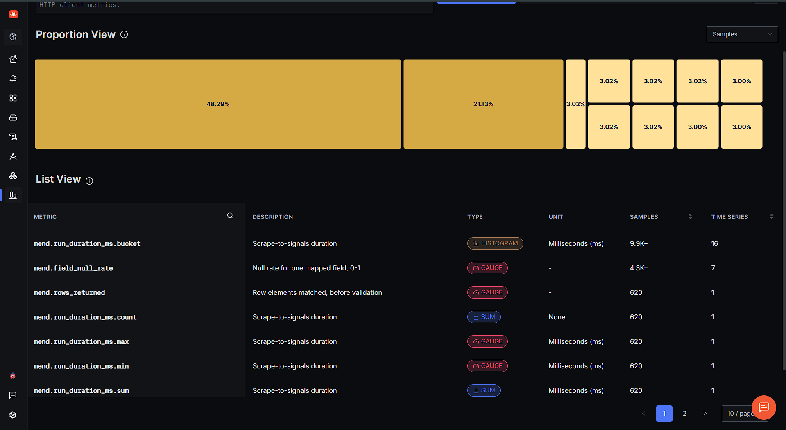

Flips which version of the Meridian pipeline the server returns at
/pipeline. The canonical URL never changes and the scraper config never learns
that versions exist.
Stable address, recovered behavior. The public URL stays the same while Mend repairs the data contract behind it. Recovery is demonstrated by the signals returning to baseline and the healthy experience being restored—not by sending the audience to a different page.
Checking…
Open pipelineChecking factory configuration…
The factory independently detects the break, derives and gates a repair, verifies the result, and reports the change request. This button runs the real repair API.

/pipeline| Scraper config | Rows | Conformance | phase null | Unmapped | failure_class | Route | vs pre-break bar |
|---|---|---|---|---|---|---|---|
| Reading… | |||||||
| Proposed selector | Conformance | phase null | Sample value | Rows wrong | Numeric gate |
|---|---|---|---|---|---|
| Reading… | |||||
This table is a local read-out, not the telemetry system.
It runs the same extraction code the test suite asserts against
(src/extract-core.mjs, byte-identical logic, verified by
test/parity.test.mjs) directly in this browser. SigNoz is the system of record.
Meridian Therapeutics is a fictional company; nothing on it is real.